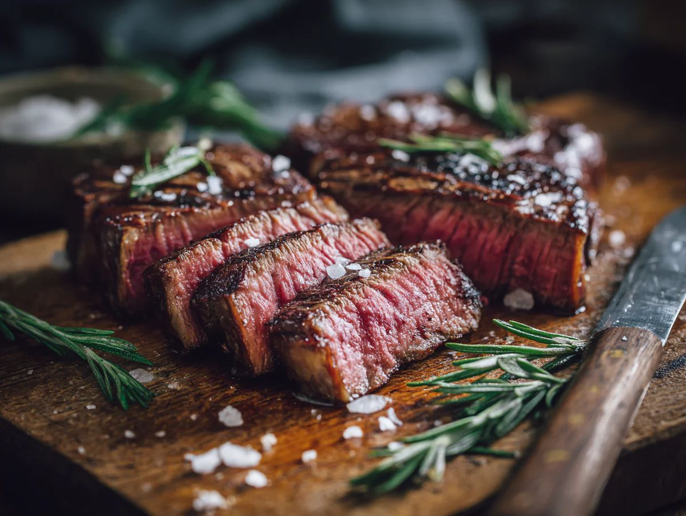
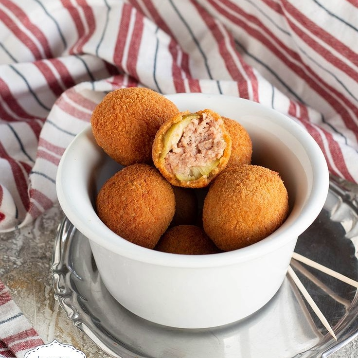

Ricette Salate
In questa sezione troverai tutte le ricette salate tipiche delle regioni italiane, dai piatti di pasta alle pizze, ideali per pranzi e cene gustose.

Toscana -Bistecca alla Fiorentina-
Ingredienti:
-Bistecca Fiorentina 2 kg
-Sale fino q.b.
-Olio extravergine d'oliva q.b.
Preparazione:
Per preparare la bistecca alla fiorentina come prima cosa prendete la carne. Dovrà essere spessa 3 dita, comprendere filetto e controfiletto e avere una giusta quantità di grasso. Lasciatela a temperatura ambiente per qualche ora, è importante che al momento della cottura non sia fredda. Preparate la brace: utilizzate carbone di quercia e leccio e lasciatelo sfogare al punto più alto di temperatura in modo che si formi un leggero velo bianco, segno che ha raggiunto la sua massima temperatura. Posizionate sopra la griglia e fatela scaldare bene. Posizionate poi la bistecca in maniera verticale, di lato alla brace, in modo che l'osso poggi sulla griglia, in questo modo la carne inizierà a scaldarsi dolcemente.
Posizionatela poi al centro della brace e cuocetela 8 minuti per lato. Girandola le righe della griglia dovranno risultare ben visibili. Una volta terminata la cottura anche dall'altro lato posizionate nuovamente la carne in verticale, accanto alla brace sempre sulla parte dell'osso. In questo modo riposando i succhi si stabilizzano e la carne risulterà più tenera. Fate attenzione a non bruciare troppo l'osso.
Trasferite la carne su un tagliere e lasciatela riposare ancora qualche minuto. Tagliate la bistecca dividendo il filetto dal controfiletto, lasciandolo in piedi.
Regolate di sale, aggiungete un filo d'olio extravergine e massaggiatela con le mani. Ora potete servirla ben calda

Le Marche -Le Olive Ascolane-
Ingredienti:
-Olive verdi 750 g
-Finocchietto selvatico fresco q.b.
Per il ripieno:
-Manzo 300 g
-Maiale 150 g
-Petto di pollo 50 g
-Carote ½
-Sedano ½ costa
-Cipolle ½
-Parmigiano Reggiano DOP 50 g
-Uova 1
-Chiodi di garofano 2
-Noce moscata q.b.
-Vino bianco 70 g
-Olio extravergine d'oliva 20 g
-Sale fino q.b.
-Pepe nero q.b.
Per la panatura:
-Farina 00 q.b.
-Uova medie q.b.
-Pangrattato q.b.
-Sale fino q.b.
Per friggere:
-Olio di semi di girasole q.b.
Preparazione:
Per preparare le olive all'ascolana per prima cosa tenete le olive in ammollo per 12 ore in acqua aromatizzata con finocchietto fresco. Occupatevi della carne per il ripieno: tagliate a pezzetti la polpa di manzo e quella di maiale.
Riducete a pezzi anche il petto di pollo. In una pentola versate un giro d'olio, poi aggiungete la carota e il sedano tagliati grossolanamente insieme a mezza cipolla in cui avrete inserito i chiodi di garofano. Lasciate soffriggere le verdure per qualche minuto.
Unite quindi anche la carne di manzo e quella di maiale, pepate, coprite con il coperchio e cuocete per circa 20 minuti. Ora aggiungete anche il petto di pollo, versate il vino e salate
Cuocete ora per un'ora con il coperchio. Trascorso questo tempo spegnete il fuoco e lasciate raffreddare. Eliminate i chiodi di garofano dalla cipolla e passate tutto nel tritacarne.
Trasferite la carne tritata in una ciotola e unite il Parmigiano Reggiano DOP grattugiato e l'uovo, insaporite con la noce moscata grattugiata e impastate con le mani per ottenere un composto omogeneo.
Ora tagliate le olive a spirale per eliminare il nocciolo. Passate alla farcitura: allargate le olive. Farcite le olive con l'impasto e richiudetele per ricreare la forma originale. Ora occupatevi della panatura: sbattete le uova con il sale, quindi passate le olive farcite prima nella farina, poi nelle uova.
Scolate per eliminare l'uovo in eccesso e infine passate le olive nel pangrattato. Riponetele su un vassoio.
Per finire passate alla frittura: scaldate l'olio di semi e quando avrà raggiunto una temperatura di 180° immergete le olive. Cuocetele per circa 2 minuti, il tempo di dorarle, quindi scolatele su un vassoio rivestito con carta assorbente e servite le olive all'ascolana leggermente intiepidite!